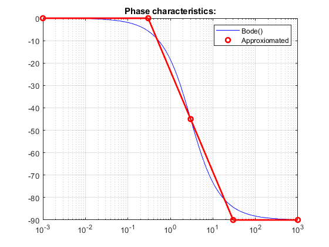
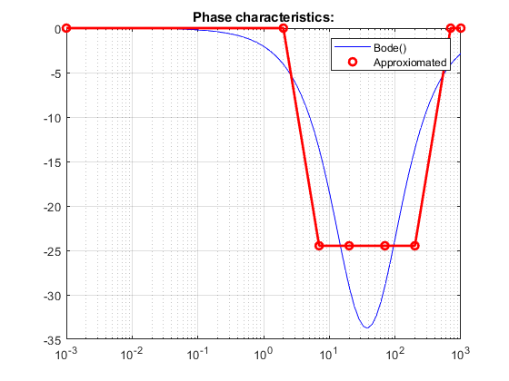
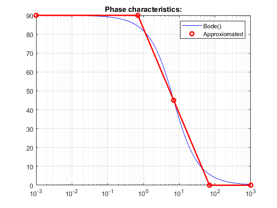
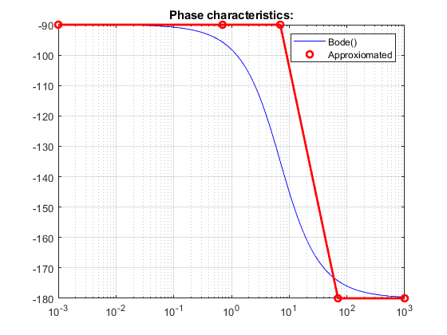
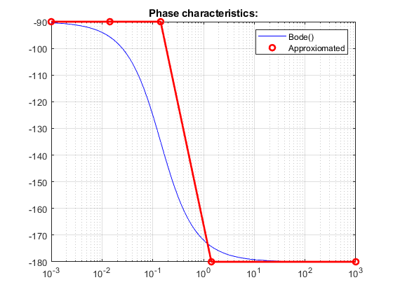
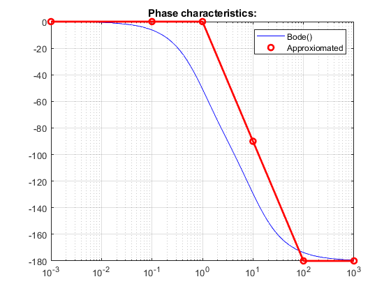
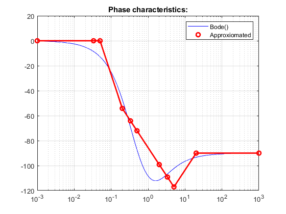
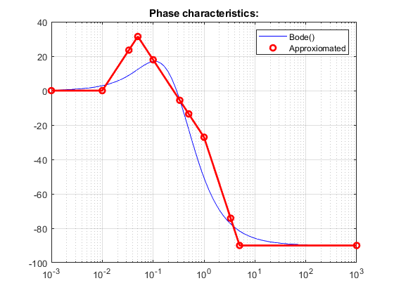
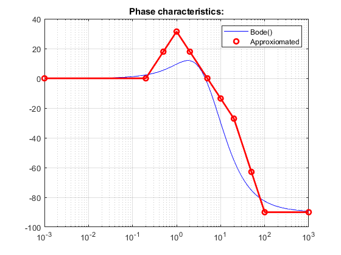

Contents
clear all; close all;
H_a(1) = zpk([],[-3], 10);
H_a(2) = zpk([-70],[-20],0.2);
H_a(3) = zpk([0],[-7],2);
H_a(4) = zpk([],[0 -7],20);
H_a(5) = zpk([],[0 -1/7],5/7);
H_a(6) = zpk([],[-1 -10],75);
H_a(7) = zpk([-2],[-1/3 -1/2], 2/6);
H_a(8) = zpk([-1/10],[-1/3 -1/2], 2*10/6);
H_a(9) = zpk([-2],[-5, -10], 20);
for id = 1:9
H = H_a(id)
wmin = 1e-3;
wmax = 1e3;
wma = calcphase(H,wmin,wmax);
plot_phase(H,wma);
end
H =
10
-----
(s+3)
Continuous-time zero/pole/gain model.
Functions
function plot_phase(H, wma)
[mag,pha,wout] = bode(H, {min(wma(:,1)), max(wma(:,1))});
pha = squeeze(pha);
figure
semilogx(wout,pha,"b");
hold on
for i = 1:length(wma)
semilogx(wma(i,1),wma(i,2),'ro', 'LineWidth',2)
end
semilogx(wma(:,1),wma(:,2),'r-', "LineWidth",2);
hold off;
legend("Bode()", "Approxiomated")
title("Phase characteristics:")
grid;shg;
end
function wma_out = calcphase(H,wmin,wmax)
z = abs(cell2mat(H.Z));
p = abs(cell2mat(H.P));
k = k_cal(H,z,p);
wma = wma_init_gen(H,wmin,wmax);
wma_z = wma;
w_z = wma;
wma_p = wma;
w_p = wma;
if isempty(z)
if k < 0
wma_z(:,2) = wma_z(:,2)*pi;
else
wma_z = wma_z;
end
else
for l=1:length(z)
if isempty(find(~z))
index_start = find(wma_z(:,1) == min(z)*0.1);
index_finish = find(wma_z(:,1) == max(z)*10);
wma_z(index_finish,2) = 90*length(z);
i = index_finish-1;
while i >= index_start
wma_z(i,2) = wma_z(i+1,2)-45*length(z)*(log10(wma_z(i+1,1)/wma_z(i,1)));
i = i - 1;
end
wma_z(index_finish:end,2) = wma_z(index_finish,2);
else
wma_z(:,2) = wma_z(:,2)+90*length(find(~z));
end
w_z(:,2) =w_z(:,2) + wma_z(:,2);
end
end
if isempty(p)
if k < 0
wma_p(:,2) = wma_p(:,2)*pi;
else
wma_p = wma_p;
end
else
for l = 1:length(p)
if find(p(l))
index_start = find(wma_p(:,1) == min(p)*0.1);
index_finish = find(wma_p(:,1) == max(p)*10);
wma_p(index_finish,2) = -90*length(p);
i = index_finish-1;
while i >= index_start+1
wma_p(i,2) = wma_p(i+1,2)+45*length(p)*(log10(wma_p(i+1,1)/wma_p(i,1)));
i = i - 1;
end
wma_p(index_finish:end,2) = wma_p(index_finish,2);
else
wma_p(:,2) = wma_p(:,2)-90*length(find(~p));
end
end
end
wma_out = [wma_z(:,1), wma_z(:,2) + wma_p(:,2)];
end
function wma_init = wma_init_gen(H, wmin, wmax)
z = abs(cell2mat(H.Z));
p = abs(cell2mat(H.P));
aux = [0.1 1 10]';
wma = [wmin; wmax];
if ~isempty(z)
wma = [wma; reshape(z.*aux,[],1)];
end
if ~isempty(p)
for i = 1:length(p)
wma = [wma; reshape(p(i).*aux,[],1)];
end
end
wma = sortrows(wma);
if ~isempty(max(find(~wma)))
wma = wma(max(find(~wma)) + 1:end);
end
wma = uniquetol(wma,1e-15);
wma_init =[wma, zeros(length(wma),1)];
end
function k = k_cal(H,z,p)
if length(z) ~= 0
for i = 1:length(z)
if z(i) == 0
z_k(i) = 1;
else
z_k(i) = z(i);
end
end
else
z_k = 1;
end
if length(p) ~= 0
for i = 1:length(p)
if p(i) == 0
p_k(i) = 1;
else
p_k(i) = p(i);
end
end
else
p_k = 1;
end
k = H.K*prod(z_k)/prod(p_k);
end
H =
0.2 (s+70)
----------
(s+20)
Continuous-time zero/pole/gain model.
H =
2 s
-----
(s+7)
Continuous-time zero/pole/gain model.
H =
20
-------
s (s+7)
Continuous-time zero/pole/gain model.
H =
0.71429
------------
s (s+0.1429)
Continuous-time zero/pole/gain model.
H =
75
------------
(s+1) (s+10)
Continuous-time zero/pole/gain model.
H =
0.33333 (s+2)
------------------
(s+0.3333) (s+0.5)
Continuous-time zero/pole/gain model.
H =
3.3333 (s+0.1)
------------------
(s+0.3333) (s+0.5)
Continuous-time zero/pole/gain model.
H =
20 (s+2)
------------
(s+5) (s+10)
Continuous-time zero/pole/gain model.
        